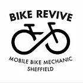

Welcome to The University Of Sheffield
Triathlon Club!
Welcome to the University of Sheffield Triathlon Club!
Triathlon: 3 sports back to back! It might sound daunting, but we absolutely love when people give it a go.
Whether you have a background in one or more of the disciplines or are a complete beginner we would love for you to join our club and become part of our triathlon family. We are open to ALL ABILITIES and provide training to match (and push) the ability you are at.
Sheffield is a lovely city with a lot to offer. We are very close to the beautiful Peak District – where our cycling training rides take place. We have club bikes that you can borrow for rides if you don’t have your own bike in Sheffield! Our club runs, swims and cycles have multiple groups of different levels of ability, and are very social so we can help motivate each other to train well and support each other.
At the start of the year we have 2 weeks of free training and a ‘Give it a Go’ duathlon which is a great opportunity to meet all of the lovely members of the club and see if you would like to join our club (you’d be silly not to)! Check out our socials for information on how to sign up.
Check out other pages on our website for more information on our normal training week, the races we compete in as a club, and much important socials throughout the year!
We also have active Instagram (@sheffunitri) and Facebook pages you could check out too!
Contact Us
For more information you can;
email us at: triathlon@sheffield.ac.uk
check out our facebook page: https://www.facebook.com/UoSTriathlon
Our Sponsors

Affiliates
The club gets money back on all purchases made via the affiliate links below (hold ctrl and click):